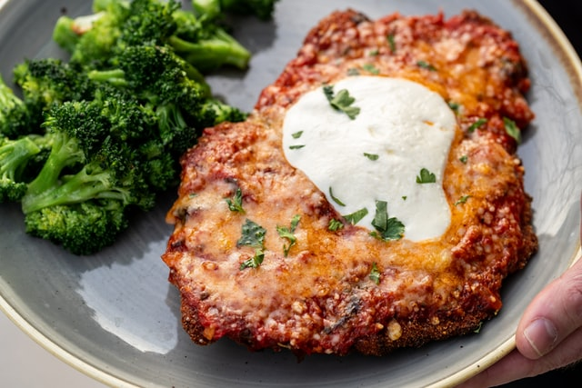

Chicken Parmesan Recipe
Chicken Parmesan

Description
A delicious chicken parmesan recipe that is perfect to pair with fettuccine alfredo. Inspired by a recipe that can be viewed here. If you're ready to make a delicious meal, please read the recipe below!
Ingredients
- 5 boneless skinless chicken breasts
- Air fryer or olive oil
- 2 eggs
- Pasta sauce
- Shredded mozzarella cheese
- 1 cup of bread crumbs
- 2 tbsp of shredded or grated parmesan cheese
- 1 tbsp garlic powder
- 1 tbsp paprika
- 1 tbsp italian seasoning
- 1 tbsp parsley
- 1/3 tbsp salt and pepper
Steps
- Wash chicken and pat dry.
- Flatten chicken or cut in half.
- Season chicken with salt, pepper, italian seasoning, and garlic powder.
- In a bowl, mix 2 eggs.
- In a second bowl, mix 1 cup of bread crumbs with 2 tbsp of shredded or grated parmesan cheese, 1 tbsp garlic powder, 1 tbsp paprika, 1 tbsp italian seasoning, 1 tbsp parsley, 1/2 tsp of salt and pepper.
- Dip and coat chicken in egg.
- Dip and coat chicken in bread crumbs.
- Cook chicken on 400F for 20 minutes in the air fryer and until the internal temperature is at least 165F.
- Place pasta sauce on top of the chicken with shredded cheese and broil for 5 minutes.
Additional recipes to enjoy: